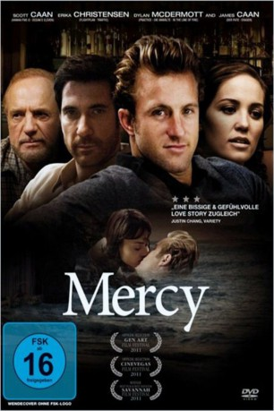

#4469 Mercy
 
 IMDB-Wertung: 6.2 / 10
IMDB-Wertung: 6.2 / 10  Metascore: 0
Metascore: 0 
Johnny Ryan ist ein erfolgreicher junger Autor von Romanzen, der aber eigentlich nicht an die große Liebe glaubt. Auf der Veröffentlichungsparty für sein neuestes Buch wird seine Welt plötzlich von der mysteriösen Mercy auf den Kopf gestellt -die einzige wichtige Kritikerin, der sein Werk nicht gefällt. Johnny beschließt, die Tiefen zu finden, die seinem Werk laut Mercy fehlen und verliebt sich dabei
Jahr: 2009
Dauer: 85 Minuten
FSK: 16
Land: USA Studio: IFC FilmsTonspuren: DTS - ,
Untertitel:
Auflösung: 1080p (1920x800) Größe: 10752 MB
Genre: Drama, Liebe
Regisseur: Patrick Hoelck
Drehbuch: SABU
Soundtrack:
Darsteller:
 Scott Caan als Johnny Ryan
Scott Caan als Johnny Ryan- Wendy Glenn als Mercy
 Troy Garity als Dane
Troy Garity als Dane Erika Christensen als Robin
Erika Christensen als Robin Alexie Gilmore als Chris
Alexie Gilmore als Chris- John Boyd als Erik
 Dylan McDermott als Jake
Dylan McDermott als Jake James Caan als Gerry
James Caan als Gerry Kelly Lynch als Herself
Kelly Lynch als Herself Balthazar Getty als Himself
Balthazar Getty als Himself Whitney Able als Heather
Whitney Able als Heather- Jamie Strange als Jessica
- Holly Valance als Tess
- Bre Blair als Beach Hotel Concierge
- Dorian Brown Pham als Dorian
 Brian Goodman als Security Guard
Brian Goodman als Security Guard- Scarlett Chorvat als Woman Concierge
- Troy Bellinghausen als Football Player
- A.J. Dunn als Football Player
- Marcus Dunstan als Football Player
- Anthony L. Gurino als Party Guest , uncredited
- Miriam Harris als Party Guest , uncredited
 Faye Yvette McQueen als Tailgater , uncredited
Faye Yvette McQueen als Tailgater , uncredited Rachel Sterling als (uncredited
Rachel Sterling als (uncredited- Anita Storr als Irish Pub Patron , uncredited
- Jessa Zarubica als (uncredited
- Michael Testone als Bartender
- Peter Simmons als Boat Guy
- Thom Cammer als Nigel
- Wesley Scott als Football Player
- Justin Vaughn als Football Player
- Kayley FitzMaurice als Front Desk Girl , uncredited
- Milton A. Marsh III als Orderly , uncredited
- R. Lee Miller als Party Guest , uncredited
 John Mitchell als Gala Party Attendee , uncredited
John Mitchell als Gala Party Attendee , uncredited- Eddie Noone als Philanthropist / Benefit Attendee , uncredited
- Heather Pence als Bar Patron , uncredited
Datei: X:\2009(G-M)\Mercy (2009, FSK16, 1920x800).mkv seit 24.09.2016
Festplatte: HD 2009(G-Z)-2010(A-F)
 Es gibt insgesamt 82 Filme in der Gruppe '2009(G-M)'
Es gibt insgesamt 82 Filme in der Gruppe '2009(G-M)'